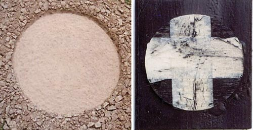

Details
Vernissage: 9. Juni 2006
Eröffnung: Johann Winkler (Oskar Kokoschka Archiv Wien)
Die Ausstellung war bis Ende Juli 2006 zu besichtigen.
Land Art und Fundstücke

Vernissage: 9. Juni 2006
Eröffnung: Johann Winkler (Oskar Kokoschka Archiv Wien)
Die Ausstellung war bis Ende Juli 2006 zu besichtigen.